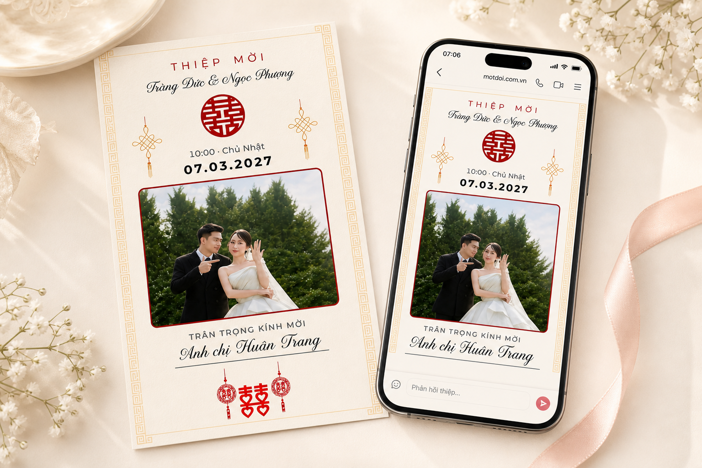

Mục lục bài viết
Rất nhiều cặp đôi mắc kẹt giữa hai lựa chọn: giữ thiệp giấy cho trang trọng, hay chuyển hẳn sang online cho nhanh gọn. Nhưng khi khách mời trải dài từ ông bà ở quê đến nhóm bạn đang làm việc ở nước ngoài, ép tất cả vào cùng một hình thức thường là giải sai đề. Câu hỏi nên đổi thành: nhóm khách nào hợp với cách mời nào? Thiệp giấy làm tốt phần nghi thức trao tận tay; thiệp cưới online làm tốt phần truyền thông tin, cập nhật và nhận phản hồi.

Thiệp online không đồng nghĩa với một đường link chung thiếu nghi thức. Khi tên khách được đặt ngay dưới dòng “Trân trọng kính mời”, thiết kế, cách xưng hô và cảm giác dành riêng cho người nhận vẫn được giữ như thiệp giấy. Tại Một Đời, việc điền tên khách mời không giới hạn không làm phát sinh thêm chi phí khi làm thiệp.
So sánh theo những việc phải làm
| Tiêu chí | Thiệp online | Thiệp giấy |
|---|---|---|
| Thời gian chuẩn bị | Có thể xem và sửa ngay | Cần thiết kế, duyệt mẫu, in và giao |
| Cập nhật | Sửa trên cùng đường link | Thường phải báo lại hoặc in lại |
| Gửi khách ở xa | Nhanh, không phí vận chuyển | Cần chuyển phát hoặc nhờ trao hộ |
| Nghi thức | Phụ thuộc cách nhắn và quan hệ | Có lợi thế khi trao trực tiếp |
| Bản đồ, RSVP | Tích hợp trực tiếp | Cần QR hoặc kênh phản hồi khác |
| Kỷ niệm vật lý | Không | Có thể giữ, trưng bày |
Nhiều cặp đôi nghĩ chuyển sang online là mặc nhiên tiết kiệm, rồi vẫn đặt in đủ số lượng như dự tính ban đầu — cuối cùng chi phí gần như không đổi. Phần rẻ đi không nằm ở một tấm thiệp, mà ở số bản in cắt bớt được, công đi giao và những buổi tối bớt phải nhắn lại địa chỉ cho từng người. Vì vậy hãy so cả quy trình thay vì chỉ so giá một tấm. Bài chi phí thiệp cưới online năm 2026 có khung ngân sách chi tiết hơn.
Nhóm khách nào nên nhận thiệp giấy?
Ưu tiên thiệp giấy cho ông bà, cô chú lớn tuổi, đại diện gia đình và những người mà việc đến tận nhà trao thiệp bản thân nó đã là một phần lễ nghi. Với nhiều gia đình Việt, tấm thiệp trao hai tay kèm lời mời trực tiếp mang sức nặng mà một đường link khó thay thế. Nếu hai bên có phong tục mời cưới rõ ràng, hãy hỏi ý kiến cha mẹ trước khi cắt số lượng in — đây thường là chỗ dễ gây phật lòng nhất.
Thiệp online phù hợp với bạn bè, đồng nghiệp, khách ở tỉnh khác hoặc nước ngoài và những nhóm thường liên lạc qua Zalo, Messenger. Ngay cả khi đã trao thiệp giấy, gửi thêm link vẫn hữu ích vì khách có bản đồ, lịch trình và nút xác nhận trong điện thoại.
Mô hình kết hợp dễ triển khai
Đầu tiên, lập danh sách khách theo ba cột: cần trao tận tay, có thể gửi online, cần cả hai. Chốt số lượng in sau khi loại trừ nhóm online, rồi in dư khoảng 10–15% cho thiệp hỏng, viết sai tên hoặc khách phát sinh sát ngày. Tiếp theo, tạo thiệp online với nội dung khớp từng dòng với bản in. Khi thiệp giấy được trao, có thể đặt QR dẫn tới đúng trang thiệp hoặc nhắn link sau cuộc gặp — khách vẫn có bản đồ và nút xác nhận ngay trong điện thoại. Muốn bản online giữ cảm giác mở thiệp giấy, có thể chọn mẫu có phong bì như mẫu thiệp Lá Thư hay mẫu thiệp Mẫu Đơn Đỏ.
Với khách online, không chỉ thả một đường link. Hãy viết lời mở đầu có tên người nhận, nói rõ đây là lời mời chính thức và nhắc ngày cưới trong tin nhắn. Xem cách gửi thiệp qua Zalo và Facebook để có mẫu lời nhắn theo từng quan hệ.
Tránh ba lỗi thường gặp
- Thông tin trên thiệp giấy và online khác giờ hoặc khác sảnh.
- Dùng cùng một lời nhắn hàng loạt cho mọi người.
- Gửi link quá sát ngày rồi mặc định khách đã đọc.
Nên lưu một bản kiểm tra cuối gồm tên, ngày âm dương nếu có, giờ đón khách, giờ làm lễ, địa chỉ và số liên hệ. Chỉ định một người kiểm cả hai phiên bản trước khi in và xuất bản.
Nếu chọn phương án kết hợp, hãy duyệt các mẫu thiệp cưới online cùng lúc với thiết kế thiệp giấy để màu sắc, kiểu chữ và thông điệp nhất quán từ lúc mời đến ngày tổ chức.
Câu hỏi thường gặp
Gửi thiệp cưới online có bị xem là thiếu trang trọng không?
Không, nếu lời nhắn được viết riêng, thông tin đầy đủ và hình thức gửi phù hợp với quan hệ giữa hai bên.